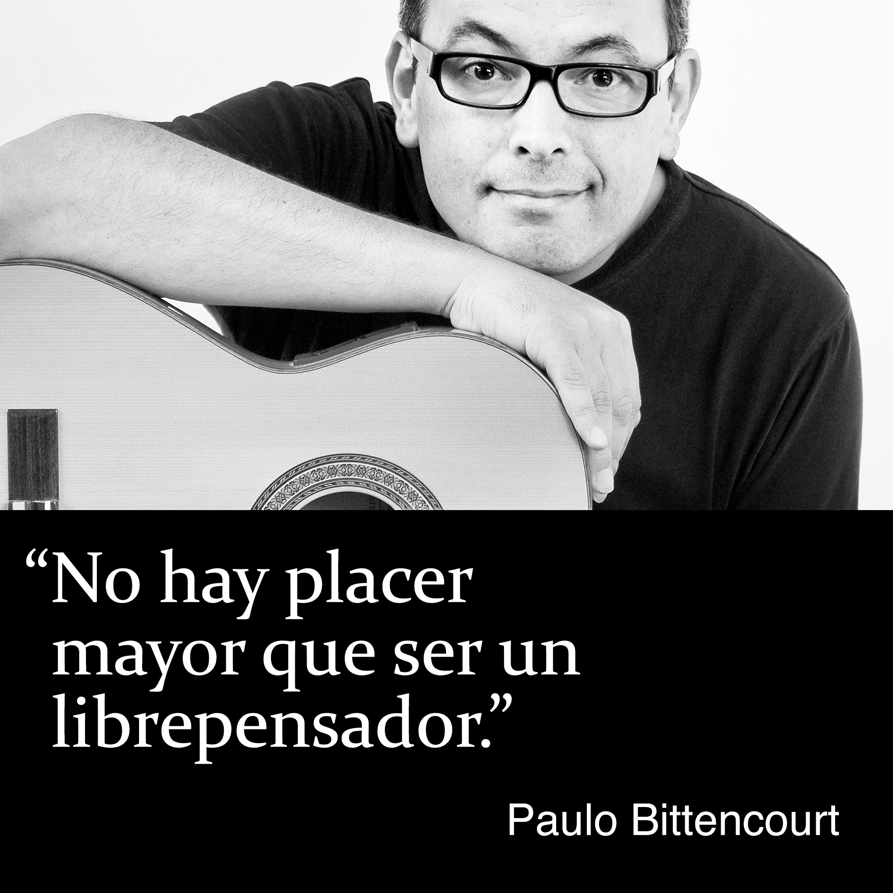

¿Quién diablos es Paulo Bittencourt?
Formación Profesional
De niño, yo soñaba con ser dibujante de cómics y dibujos animados. Con trece años de edad, trabajé en el período vespertino como ilustrador en un periódico y en una empresa de artes gráficas de mi ciudad natal, Castro, en Brasil.
En 1989, tras cinco semestres en una Facultad de Teología, en San Pablo, abandoné los estudios y mi mudé a Europa, viviendo temporalmente en Portugal, Francia, Inglaterra y Alemania hasta, el año siguiente, ir a estudiar alemán en Austria, donde entonces me radiqué.
En 1992, sin formación musical alguna, pasé la prueba de admisión de las Facultades de Canto Solo y Ópera del Conservatorio de la Ciudad de Viena. En mi examen final, interpreté al Conde de Almaviva, en la ópera Las Bodas de Fígaro, de Wolfgang Amadeus Mozart.
Actividad Profesional
Durante los estudios, canté en corales profesionales, con presentaciones en Austria, Israel, Italia, Japón y Estados Unidos, como el Coral Concentus Vocalis y la Orquesta Filarmónica de Israel, bajo la batuta de Theodor Guschlbauer, en Tel Aviv y Jerusalén, el Coral Arnold Schoenberg y la Orquesta Filarmónica de Viena, bajo la batuta de Seiji Ozawa, en la Konzerthaus de Viena y en el Carnegie Hall de Nueva York, y una producción independiente de Orfeo en los Infiernos, de Jacques Offenbach, con una gira de un mes por Japón.
Como solista, di recitales en la Sala Schubert de la Konzerthaus de Viena, con obras de Heitor Villa-Lobos, y en la Sala Bösendorfer de Viena, con obras de Villa-Lobos y Oscar Lorenzo Fernández. Me presenté en diversos teatros, como el Stadttheater Baden, en Austria, y el Teatro Akzent de Viena, interpretando a El Rey, en la ópera La Astuta, de Carl Orff, El Padre, en Hansel y Gretel, de Engelbert Humperdinck, Fígaro, en El Barbero de Sevilla, de Gioachino Rossini, y Guglielmo, en Così Fan Tutte, de Mozart.
En 1995, fui contratado por el mayor teatro de la lengua alemana, el Burgtheater de Viena, donde canté y actué en piezas como La Ópera de los Tres Centavos, de Bertolt Brecht, Orfeo en los Infiernos, de Offenbach, Ein Sportstück, de Elfriede Jelinek, y Troilo y Crésida, de William Shakespeare.
Autodidacta en la guitarra, soy intérprete de los clásicos de la bossa nova↗︎, como las composiciones de Antônio Carlos Jobim y Vinícius de Moraes, y de las canciones de Chico Buarque.
Como artista de voice-over, narro vídeos corporativos de compañías internacionales, como Plasser & Theurer, TGW Logistics, Doka y Lyoness.
Como fotógrafo, mis temas predilectos son fotografía de calle, retratos y paisajes. Fui contratado para fotografiar una orquesta y una cantante de ópera, durante una de sus presentaciones en la Volksoper de Viena.
Libros
Me veo como librepensador y soy el autor de los libros Liberto de la Religión, Perdendo Tempo Com Deus (Perdiendo Tiempo Con Dios) y Com Zeus Não Se Brinca (Con Zeus No Se Juega).
Videos
Difundo el Libre Pensamiento también a través de mi canal↗︎ de YouTube.
Combate a la Discriminación
Tras haber vivido 25 años en Austria, en 2015 decidí naturalizarme austriaco y descubrí que residencia permanente y perfecto dominio del alemán ya no eran suficientes. Algunos años antes, la ley había sido alterada para exigir de los extranjeros altos rendimientos. Por la nueva ley, el 70% de los propios austriacos no tendrían los medios para naturalizarse. En vista de esa evidente incoherencia, que, además de todo, es discriminatoria, pues impide a inmigrantes legalizados e integrados de votar, fui tema de diversos reportajes de televisión, radio, periódicos y revistas. Un discurso sobre mi caso fue proferido en el Parlamento Austriaco. La SOS Mitmensch, una organización austriaca de derechos humanos, pegó por toda Viena carteles con mi foto. No mucho tiempo después, me convertí en ciudadano de Austria.
¿Bitencourt o Bittencourt?
¿Bitencourt con una te o Bittencourt con dos tees? El origen y significado del apellido Bittencourt↗︎ (en portugués).